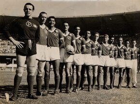

Sobre nós

O Palmeiras foi fundado em 26 de agosto de 1914 como Palestra Itália e se tornou um dos clubes mais vitoriosos do futebol brasileiro, com conquistas nacionais e internacionais.
O clube nasceu no bairro do Brás, em São Paulo, fundado por imigrantes italianos que buscavam representar sua comunidade no futebol paulista. Inicialmente chamado Palestra Itália, o nome remete a "ginásio" ou "academia" em italiano, simbolizando a prática esportiva e a integração social da colônia italiana. Entre os fundadores estavam Luigi Cervo, Luigi Marzo, Vincenzo Ragognetti e Ezequiel Simone, que se tornaria o primeiro presidente do clube. A primeira partida oficial ocorreu em 24 de janeiro de 1915, com vitória de 2 a 0 sobre o Savóia.